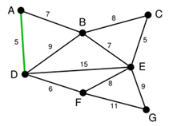
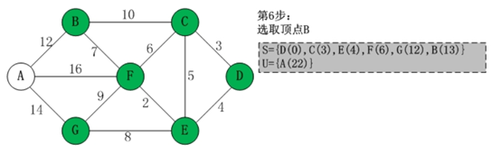
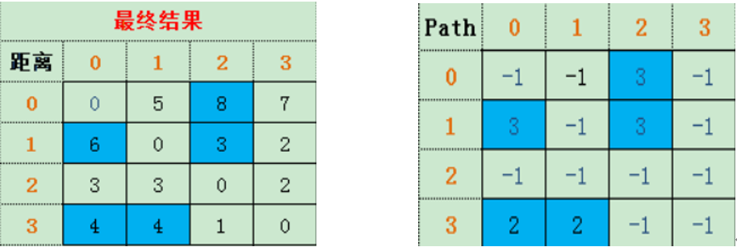

2020-08-15
90
图--知识点整理
图
一、图的基本概要
1.图的定义
图 可表示Graph = (V,E)
V:顶点（数据元素）的有穷集合
E:边的有穷集合
Path(x,y)表示从x到y的一条单向道路
有向边：< x,y >与< y,x>不等
无向边：（x,y）=(y,x)
2.完全图
无向完全图：n个顶点的无向图最大边数是n(n-1)/2
有向完全图：n个顶点的无向图最大边数是n(n-1)
3.图的基本术语
稀疏图：含有很少边或弧
稠密图：含有很多边或弧
权：与图的边或者弧相关的数
网：带权的图，即标出每两点间距离的图
度：在无向图中顶点边的数目
入度：有向图中顶点入边的数目
出度：有向图中顶点出边的数目
有向图顶点的度：有向图中顶点出边的数目
入度之和=出度之和=边的总数
路径：从顶点1到顶点2的
路径长度：路径上经过的边的数目
回路：一条路径上的前后两个断点相同，起点终点重合
顶点连通：顶点1到2有路径，则称可连通
连通图：任何两点都连通的无向图
连通分量：无向图的极大连通子图
强连通图：任何两点都互相连通的有向图
最小生成树：连通图的所有生成树中权值之和最小的生成树
4.图的表示方法
4.1 邻接矩阵表示法
带权图：将邻接矩阵中值为1的元素用相应的权值代替；值为0的元素用无穷大代替。
邻接矩阵的优缺点：
(1)简单、直观、易于理解
(2)方便检查任何一对顶点之间是否存在边
(3)方便计算任一顶带你的度
(4)方便求任一顶点的所有邻接点
(5)浪费空间：稀疏图
(6)浪费时间：统计稀疏图的总边数
邻接矩阵数据结构定义：
Typedef struct{
Int Nv;
Int Ne;
WeightType A[MaxVexNum][ MaxVexNum];
Vextype Vex[MaxVexNum
}AMGraph;
4.2 图的邻接表表示法
采用链式结构存储
顶点的链接表由顶点的所有邻接点构成
图的邻接表由所有顶点邻接表构成
头结点：头结点包含顶点自身的信息域和指向该顶点的邻接表
边结点：边结点包含邻接点、边的信息、指针域
4.3 逆邻接表
顶点的逆邻接表由进来的边的另一个端点构成
图的逆邻接表由所有顶点的逆邻接表构成

逆邻接表示意图
邻接表的存储空间
对于有n个顶点e条边的有向图，用邻接表存储需要n+e个单元
对于有n个顶点e条边的无向图，用邻接表存储需要n+2e个单元
4.4 图的深度优先遍历
基本思想
刚开始，图中所有的顶点都没有访问，首先从图的某一个顶点V0出发，访问此顶点，然后依次从V0的未被访问的邻接点出发，深度优先遍历，直至图中所有和V0相通的顶点都被访问到，若此时图还有未被访问的顶点，则另选一个未被访问的顶点作为新起点，重复上述过程，直至所有顶点都被访问为止。
结论
深度优先遍历序列和生成树或者生成森林都不唯一;
深度优先遍历是树的先序遍历的推广。
#深度优先遍历
Void DFS(Vertex V)
{
visited[V] = true;
for (V的每个邻接点 W)
if(!visited[W])
DFS(W)
}4.5 广度优先遍历
首先从图的某一个顶点V0出发，访问该顶点后，依次访问V0的各个未被访问的邻接点，然后分辨从这些邻接点出发，依次访问他们的邻接点，并按这些顶点被访问的次序来访问他们的邻接点，重复上述过程，直至访问结束。
结论
广度优先遍历类似于树的层序遍历。
#广度优先遍历
void BFS (Vertex V)
{
visited[V] = true;
Enqueue(V,Q);
while (!IsEmpty(Q))
{ V = Dequeue(Q);
for (V的每个邻接点W)
if (!visited[W])
{ visited[W] = true;
Enqueue(W,Q);
}
}
}二、最小生成树总结
找权值之和最小的极小连通子网，问题转换为在连通网中找一颗生成树
最小生成树存在<->图连通
1.Prim算法（普利姆算法）
Prim算法简单描述:
1).输入：一个加权连通图，其中顶点集合为V，边集合为E；
2).初始化：Vnew = {x}，其中x为集合V中的任一节点（起始点），Enew = {},为空；
3).重复下列操作，直到Vnew = V：
a.在集合E中选取权值最小的边 < u, v>，其中u为集合Vnew中的元素，而v不在Vnew集合当中，并且v∈V（如果存在有多条满足前述条件即具有相同权值的边，则可任意选取其中之一）；
b.将v加入集合Vnew中，将
4).输出：使用集合Vnew和Enew来描述所得到的最小生成树。
下面为一个例子
此图为原始的加权连通图，每条边一侧的数字代表其权值。
以D为起点，已选集合U为{D}可知A,B,C,D均与D相连，A与D之间边的权值最小为5，因此将A加入集合U{D,A}。此时未选的为B,C,E,F,G。
下一个顶点为距离A或D距离最近的顶点，在A-B,D-E,D-F中选择D-F权值为6最小，因此将F加入集合U{D,A,F}，此时未选的顶点为B,C,E,G。
重复上面算法，这一步选择A-B权值为7，将B加入集合{D,A,F,B}，此时未选的顶点为C,E,G。
继续重复算法，这一步选择B-E权值为7，将E加入集合U{D,A,F,B,E}，此时未选的顶点为C,G。
重复算法，这一步选择E-C权值为5，将C加入集合U{D,A,F,B,E,C}，此时未选的顶点为G。
最后一步，选择距离顶点G最近的顶点，为E-G权值为9，将G加入集合U{D,A,F,B,E,C,G}。
如下是prim算法程序
void MiniSpanTree_Prim(AMGraph G,VerTexType u)
{//无向网G以邻接矩阵形式存储，从顶点u出发构造G的最小生成树，输出T的各条边
k = LocateVex(G,u);//k为顶点u的下标
for(j=0 ;j<G.vexnum;++j)//对于V-U的每一个顶点vj,初始化closedge[j]
if (j!=k) closedge[j] = {u,G.arcs[k][j]};//{adjvex,lowcost}
closedeg[k].lowcost = 0;//初始，U={u}
for(i=1;i<G.vexnum;++i)
{//选择其余n-1个顶点，生成n-1条边（n = G.vexnum）
k= Min(colsedge);
//求出T的下一个结点，第k个顶点，closedge[k]中存有当前最小边
u0 = closedge[k].adjvex;//u0为最小边的一个顶点，u0 ∈U
v0 = G.vexs[k];//v0为最小边的另一个顶点，v0∈V-U
cout<<u0<<v0;//输出当前最小边（u0,v0）
closedge[k].lowcost = 0;//第k个顶点并入U集
for(j=0;j<G.vexnum;++i)
if(G.arcs[k][j] < closedge[j].lowcost)//新顶点并入U后重新选择最小边
colsedge[j] = {G.vexs[k],G.arcs[k][j]};}
}Kruskal算法（克鲁斯卡尔算法）
:
1).记Graph中有v个顶点，e个边
2).新建图Graphnew，Graphnew中拥有原图中相同的e个顶点，但没有边
3).将原图Graph中所有e个边按权值从小到大排序
4).循环：从权值最小的边开始遍历每条边 直至图Graph中所有的节点都在同一个连通分量中，如果这条边连接的两个节点于图Graphnew中不在同一个连通分量中，添加这条边到图Graphnew中。
下面是一个例子
首先第一步，有一张图Graph，有若干顶点和边；
将所有的边的长度排序，用排序的结果作为选择边的依据，排序完成后，率先选择了边A-D权值为5；
在剩下的边中寻找。找到了C-E。这里边的权重也是5；
依次类推找到了权值6,7,7，即D-F，A-B，B-E
下面继续选择，B-C或者E-F尽管现在长度为8的边是最小的未选择的边。但是现在他们已经连通了（对于B-C可以通过C-E,E-B来连接，类似的E-F可以通过E-B,B-A,A-D,D-F来接连）。所以不需要选择他们。类似的B-D也已经连通了。最后就剩下E-G和F-G了。选择了权值更小的E-G。
如下是Kruskal算法程序
void MiniSpanTree_Kruskal(MGraph G)
{//无向网以邻接矩阵形式存储，构造G的最小数T，输出T的各条边
sort(Edge);//将数组Edge中的元素按权值从小到大排序
for(i=0;i<G.vexnum;i++)//辅助数组，表示各个顶点自成一个连通分量
Vexset[i] = i;
for(i=0;i<G.arcnum;i++)//依次查看数组Edge中的边
{
v1 = LocateVex(G,Edge[i].Head);//v1为边的始点Head的下标
v2 = LocateVex(G,Edge[i].Tail);//v2为边的终点Tail的下标
vs1 = Vexset[v1];//获取边Edge[i]的始点所在的连通分量vs1
vs2 = Vexset[v2];//获取边Edge[i]的终点所在的连通分量vs2
if(vs1 != vs2)//边的两个顶点分属不同的连通分量
{
cout << Edge[i].Head<<Edge[i].Tail;//输出此边
for(j=0 ; j<G.vexnum;j++)//合并vs1 vs2两个分量，即两个集合统一编号
if(Vexset[j] == vs2) Vexset[j] =vs1;//集合编号为vs2的都改为vs1
}
}
}
三、拓扑排序
1).AOV网：顶点表示活动，用有向边表示活动之间的优先关系的有向图。
注：不允许出现环，这意味着某项活动应以自己为先决条件。
2)若 < Vi，Vj >是图中有向边，则Vi是Vj的直接前驱, Vj是Vi的直接后继。
3)拓扑序列：拓扑排序所得到的序列。
4)拓扑排序的方法：
a.在有向图中选一个没以前驱的顶点且输出；
b.从图中删除该顶点和所有以它为尾的弧；
c.重复上述步骤，直至全部顶点均已输出；或者当图中不存在无前驱的结点为止。
拓扑排序的过程是判断一个图是否有环的过程
下面是一个例子
首先找到无前驱的顶点C1,C9，然后先输出C1并删除顶点C1以及以它为尾的弧；
接着再从C2、C4、C9这三个无前驱结点中选择一个删除掉，先选择删除C2，输出C2，并删除以它为尾的弧；

最终得拓扑序列：C1--C2--C3--C4--C5--C7--C9--C10--C11--C6--C12--C8
四、图的最短路径
单元最短路径问题：从某个固定的原点出发，求这个原点到其他所有顶点的最短距离
多源最短路径问题：求任意两个顶点之间的最短距离。
4.1 Dijsktra算法
按照路径长度递增（非递减）的顺序产生最短路径。适用于有向图和无向图。
基本思想
1.指定一个起始点s
2.此外，引进两个集合S,U，S的作用是记录已求出最短路径的顶点(以及相应的最短路径长度)，而U则是记录还未求出最短路径的顶点(以及该顶点到起点s的距离)
3.初始时，S中只有起点s；U中是除s之外的顶点，并且U中顶点的路径是”起点s到该顶点的路径”。然后，从U中找出路径最短的顶点，并将其加入到S中；接着，更新U中的顶点和顶点对应的路径。然后，再从U中找出路径最短的顶点，并将其加入到S中；接着，更新U中的顶点和顶点对应的路径。
下面为一个例子


4.2 Floyd算法
特点：把每一条最短路径不是一次确定，而是逐步形成；适用于用邻接矩阵存储的稠密图的多源路径最短问题
下面通过一个例子来理解
a）如图：存在0,1,2,3 ,4个点，两点之间的距离就是边上的数字，如果两点之间，没有边相连，则无法到达，为无穷大。
b）要让任意两点（例如从顶点a点到顶点b）之间的路程变短，只能引入第三个点（顶点k），并通过这个顶点k中转即a->k->b，才可能缩短原来从顶点a点到顶点b的路程。那么这个中转的顶点k是0~n中的哪个点呢？
首先根据图创建一个邻接矩阵，进而再创建一个path矩阵，用于存放任意一对顶点之间的最短路径
从0开始作为中转点，循环执行以下步骤：
1.用i，j两个变量分别指向二元组里的两个元素，比如{0，1}这个二元组，i指向0；j指向1。从0开始作为中转的点
2.判断 (A[ i ][ 0 ]+A[ 0 ][ j ] ) < A[ i ][ j ] （即判断 i -> j，i点到j点的距离是否小于从0点中转的距离），如果false，则判断下一组二元数组。
3. 如果表达式为真，更新A[i][j]的值为A[i][0]+A[0][j]，Path[i] [j]的值为点0（即设置i到j要经过0点中转）
如果某两个点之间的中转点不止一个，通过逐层递进，递归的过程，最终得到两个顶点的距离。

Comments
回复